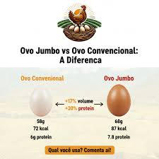
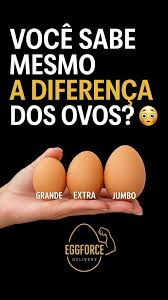
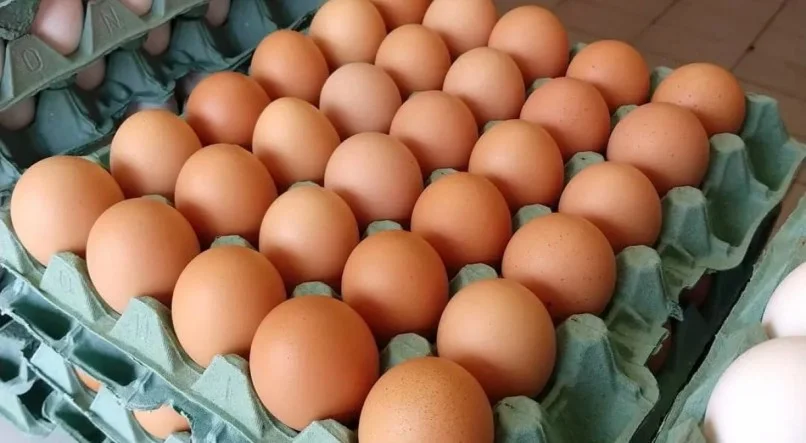

Classificação dos Ovos
Uma mesma granja pode produzir ovos de diferentes tamanhos. Na indústria, a classificação ocorre conforme o peso.
- Médio: 38 g a 47,99 g
- Grande: 48 g a 57,99 g
- Extra: 58 g a 67,99 g
- Jumbo: acima de 68 g
Conectando inovação digital, inteligência artificial e produção agrícola eficiente para um agronegócio mais sustentável.
Uma mesma granja pode produzir ovos de diferentes tamanhos. Na indústria, a classificação ocorre conforme o peso.
A idade da galinha é o principal fator responsável pelo tamanho do ovo.
Conforme a ave envelhece, ocorre uma ampliação da abertura pélvica, permitindo a passagem de ovos maiores.
As aves produzem ovos desde aproximadamente 18 até 90 semanas de vida.
A partir de 50 semanas elas já possuem maior capacidade para produzir ovos jumbo.



A alimentação deve ser altamente nutritiva, rica em proteínas e baseada principalmente em soja para favorecer a produção.
O aumento da luz artificial nos galinheiros pode estimular a produção de ovos.
Sensores inteligentes, análise de dados, automação e inteligência artificial estão transformando o agronegócio em uma atividade mais eficiente e sustentável.
Interação com o Leitor